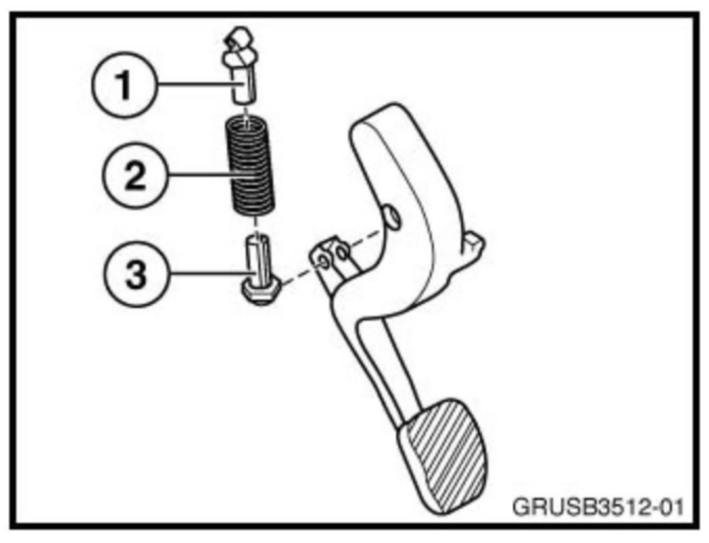

M/T - Repairs To Clutch Pedal Assembly
SI B35 01 12Pedals
April 2012
Technical Service
SUBJECT
Repairs to Clutch Pedal Assembly
MODEL
All with manual transmission
INFORMATION

The clutch pedal assembly incorporates a mechanical mechanism to allow for smooth application of the clutch. This mechanism consists of the following components:
Bracket (1)
Over-center spring (2)
Bracket (3)
The two brackets form a barrel and plunger-type assembly. These brackets should always be replaced as a set whenever replacement is necessary.
PARTS INFORMATION
Refer to ETK.
WARRANTY INFORMATION
For information only